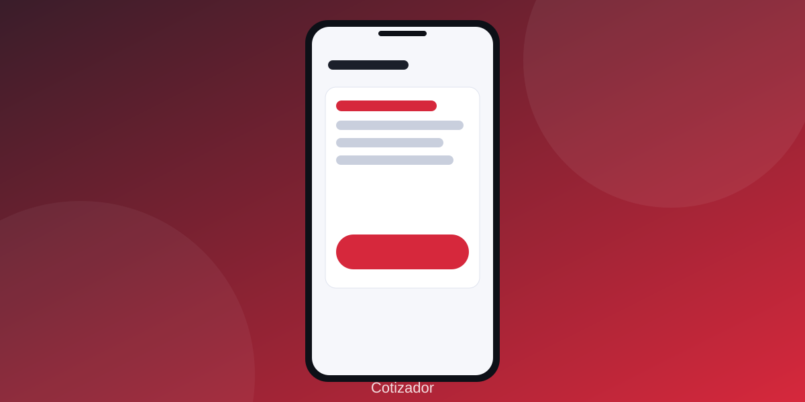

Sobre el proyecto
KandoFlow nace en la materia Ingeniería de Software I como propuesta para apoyar a una asesora comercial Mazda. Busca reducir el tiempo de cotización, ordenar los documentos de crédito y evitar omisiones durante la entrega de vehículos.
Autor: Rodrigo Valdespino Vértiz
Dupla: Emiliano Cabañas Prieto
Usuaria objetivo: Erika Vértiz, asesora de ventas.

Roles del sistema
| Rol | Objetivo | Acceso |
|---|---|---|
| Asesora de ventas | Cotizar, integrar expedientes y conducir entregas | Casos de uso comerciales, de expediente y de entrega |
| Administrador | Mantener plantillas y supervisar sincronización | Configuración técnica únicamente |
| Cliente / prospecto | Recibir cotización y una entrega documentada | Vista temporal iniciada por la asesora |
Línea del tiempo
- 29 sep 2026 — Visión del producto v2.0 y especificación de requisitos.
- 30 sep 2026 — Prototipo web publicado en Figma Make con 31 pantallas.
- 30 sep 2026 — Adenda 2.1: acceso por rol, login y panel de administrador.
- Siguiente etapa — Validar reglas financieras, persistencia, control de acceso y sincronización.
Preguntas frecuentes
No. Es un paquete de análisis con prototipo editable en Figma (31 pantallas). La aplicación aún no está implementada; este sitio presenta la propuesta.
Se propone una PWA con datos locales (IndexedDB): cotización, datos descargados y checklist funcionarían sin red tras la primera preparación. La sincronización sí requiere conexión.
La asesora de ventas como operadora principal y un administrador para plantillas y sincronización. El cliente solo confirma recepción o acuerdos en el dispositivo de la asesora.
No. La aplicación abre una conversación con el texto precargado y el envío lo confirma la persona.